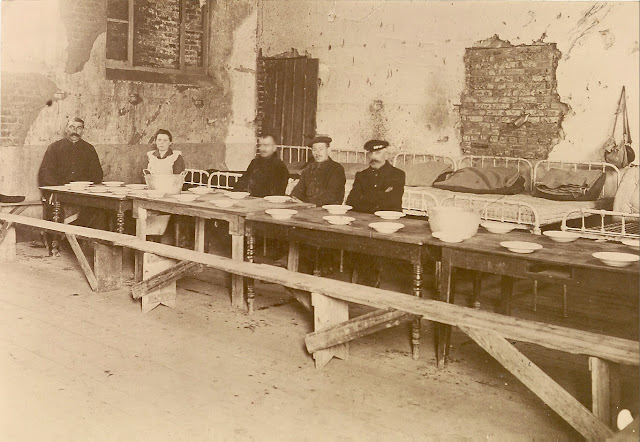
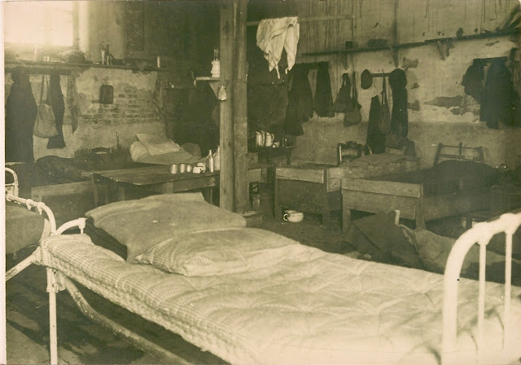
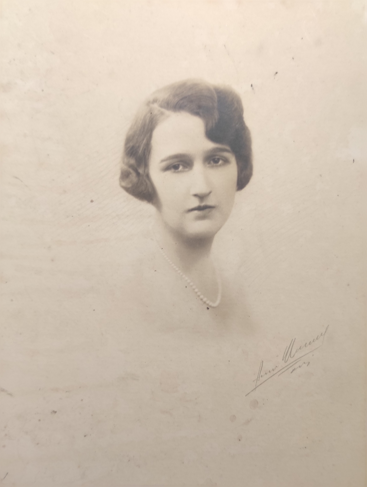
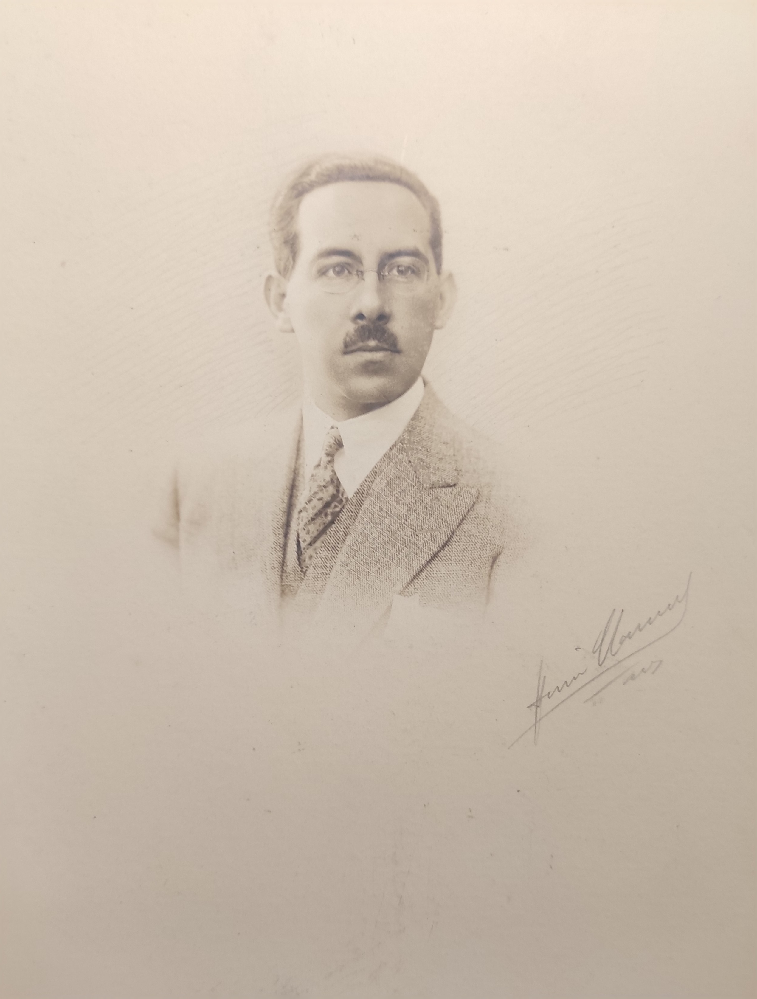
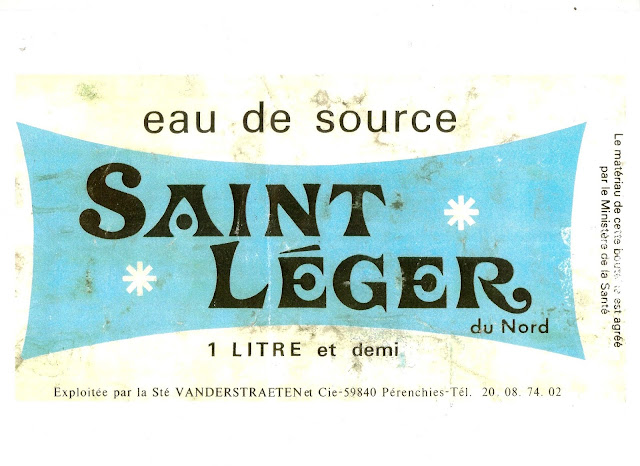

Claude
Saint-Léger (1897‑1944) –
Après l’armistice de 1918 à 1939
Rappel de la première partie
Claude Saint-Léger naît en 1897 à Lille, fils d’André Saint-Léger et de Marguerite Delemer. La famille vit dans un milieu industriel et cultivé, dans le Nord industriel, et inculque à Claude le sens du devoir et de l’engagement.
Durant la Première Guerre mondiale, Claude s’évade de Lille occupé, traverse la Belgique puis la Hollande, l’Angleterre et rejoint la France. Il s’engage dans le 32ᵉ Régiment de Dragons puis dans le 26ᵉ Bataillon de Chasseurs à Pied. Il participe à de nombreuses opérations, se distingue pour son courage et son leadership, et reçoit plusieurs citations, la Croix de Guerre et, plus tard, la Légion d’Honneur. Il effectue de rares permissions à Pau, avant d’être démobilisé à 21 ans, en novembre 1918.
Le contexte historique et social de l’entre-deux-guerres
La fin de la Première Guerre mondiale laisse la France profondément marquée. Dans le Nord industriel, des villes comme Lille, Pérenchies ou Seclin portent encore les traces visibles des combats : bâtiments détruits, infrastructures à reconstruire, populations meurtries. La guerre a coûté la vie à de nombreux hommes, et beaucoup d’ouvriers ne reviendront jamais, tandis que d’autres rentrent blessés ou traumatisés. Les familles doivent réapprendre à vivre dans un quotidien transformé, avec des femmes occupant des postes jusque-là réservés aux hommes et des communautés confrontées à des pertes démographiques et économiques importantes.
L’économie nationale peine à se relever. Les usines doivent reconstruire leurs bâtiments, remplacer les machines détruites et s’adapter à une pénurie de matières premières. Les commandes s’accumulent mais restent difficiles à honorer, et l’effondrement financier touche plusieurs secteurs. L’État intervient, en particulier par les indemnités de dommages de guerre, qui permettent un redémarrage partiel, mais la relance industrielle exige un effort considérable des entrepreneurs et des ouvriers.
Le climat social est instable. Dans le Nord, fortement industrialisé, les syndicats et mouvements ouvriers se développent, et les grèves et revendications sont fréquentes. Les populations tentent de concilier la reconstruction économique avec le besoin de stabilité sociale, dans un contexte où le souvenir des souffrances de la guerre est omniprésent.
Politiquement, la France traverse une période fragile : l’instabilité des gouvernements, l’inflation et le chômage pèsent sur le moral collectif. La société reste marquée par le patriotisme et le souvenir des sacrifices consentis, mais l’esprit de vigilance vis-à-vis des tensions internationales commence à émerger, annonçant déjà les bouleversements des années 1930 et la montée des périls qui conduiront à la Seconde Guerre mondiale.
« En 1936, c'était de Front Populaire avec Léon Blum. Il y avait des émeutes dans les rues. J'ai vu renverser un tramway. Il y eut des occupations d'usines, des grèves. On commençait à parler d’Hitler et du nazisme. » (Agnès Wattinne)
La reconstruction des Établissements Agache
Au lendemain de la Première Guerre mondiale, les usines Agache de Pérenchies et de La Madeleine sont totalement dévastées. Les bâtiments industriels ont été détruits, les machines emportées ou endommagées, les matières premières réquisitionnées, et le personnel dispersé ou disparu. L’entreprise conserve sa puissance financière mais doit reconstruire entièrement son actif industriel. La loi du 17 avril 1919 reconnaît les dommages de guerre, ouvrant la voie aux compensations financières, mais la direction doit agir sans attendre pour relancer l’activité.
« En octobre 1918, les usines de Pérenchies et de La Madeleine-les-Lille furent rendues à la société à la suite de l’avance victorieuse de nos armées, on put mesurer la gravité des épreuves qu’elles avaient subies.
Plus de matières premières, partout des monceaux de décombres, des moyens de communication très précaires dans un pays privé de toutes ressources, enfin un personnel dont la majeure partie était disparue ou dispersée : telle était la vision qu’offrait au lendemain de l’armistice, le domaine industriel de la Société. »
- livre du Centenaire des Ets Agache de 1928
Le Conseil d’Administration s’implique pleinement : augmentation du capital social, emprunt obligataire, mobilisation des ouvriers pour le déblaiement, le démontage, la réparation et la reconstruction des bâtiments. Le 17 octobre 1919, un embryon d’usine redémarre la production de fil, un an après la restitution des usines par les armées. Il faudra encore cinq ans pour que Pérenchies retrouve sa pleine capacité, avec 91 500 broches, 650 métiers à tisser et 4 500 ouvriers sur les différents sites.
En 1919, Claude est nommé directeur des Etablissements Agache et administrateur au Conseil d’Administration. Avec André, ils font partie des actionnaires d’Agache.
« Mon beau-père André Saint-Léger, avait une usine de filature de lin située à la Madeleine. Cette usine avait été très endommagée par la guerre et mon beau-père la vendit à M. Édouard Agache, père de Donat Agache qui avait une usine à Pérenchies, moyennant deux places d'administrateurs : pour André et pour Claude »
Agnès Wattine
« En plus des usines de Pérenchies, Agache avait racheté les deux usines Saint-Léger de la Madeleine, et aussi deux usines à Seclin, une blanchisserie à Pont de Nieppe, et une usine en Italie près de Côme. »
Agnès Wattine
En 1929, Claude deviendra Administrateur-délégué, c’est à dire qu’il aura un mandat exécutif confié par le conseil. D’ailleurs, en 1932, nous avons des échanges de correspondance entre Claude et un certain Marco, qui montre son niveau de responsabilités :
« Cher Marco, … En Italie, tu es pour tout le monde le représentant d'Agache, qui est une grosse affaire ayant une réputation solide, et te laissant pleins pouvoirs. »
Claude
Reconstruction sociale et paternalisme industriel de Marguerite Saint-Léger
La reconstruction matérielle va de pair avec la reconstruction sociale. Pérenchies est une ville détruite : misère généralisée, logements insuffisants, réfugiés et prisonniers de guerre. Mme André Saint-Léger (mère de Claude, née Marguerite Delemer) joue un rôle central dans l’organisation de l’aide humanitaire et sociale.
« Pérenchies, notamment, ne pouvait renaître de ses ruines que lorsqu’une atmosphère de vie aurait été recréée.
C’est à cette tâche préliminaire que Mme André Saint-Léger, femme de l’un des Administrateurs-Délégués des Etablissements Agache, et M. Henri Bouchery, à la fois Maire de Pérenchies et Directeur-Général de la Société, allaient consacrer toute leur énergie et tout leur cœur. »
« Dès son retour, M. Bouchery s’installa dans les ruines, en compagnie de Mme Saint-Léger et d’une dizaine de personnes dévouées. Un logement de fortune fut construit avec des matériaux récupérés çà et là. C’est sous ce frêle abri que le Maire élabora par ordre d’urgence un plan de travaux et la réorganisation des services municipaux. »
– Livre du Centenaire des Établissements Agache, 1928
Elle met en place des cantines et dortoirs, crée des dispensaires et initie des actions de santé publique pour lutter contre la mortalité et soutenir la natalité.
« La foi agissante, que Mme Saint-Léger et M. Bouchery ont su faire rayonner autour d‘eux, ne permet plus de douter, dès le mois de juillet 1919, de la prompte résurrection de Pérenchies. »
– Livre du Centenaire des Établissements Agache, 1928

Elle organise également des œuvres sociales pour les ouvriers et leurs familles : crèches, instituts ménagers, jardins ouvriers, maisons de retraite et associations culturelles et sportives. Ces actions illustrent le paternalisme industriel : un engagement social étroit de l’entreprise envers ses employés, visant à garantir leur sécurité, leur santé et leur bien-être, tout en renforçant la cohésion et la fidélité du personnel.
« Ma belle-mère s'occupa de construire des maisons ouvrières. Il y a encore une cité ouvrière à Pérenchies qui s'appelle "cité Marguerite Saint-Léger ». Agnès
Le mariage de Claude et Agnès Saint-Léger
« Vers 1920 (je crois) Claude eut une très forte fièvre typhoïde. Il resta plusieurs jours sans connaissance. Comme traitement, il y avait deux infirmiers qui le trempaient dans un baignoire d'eau froide toutes les trois heures. Quand il se releva, il ne savait plus lire, ni écrire, ni compter. On le transporta à Bourbon Laucy où il réapprit à marcher, et à lire.
En 1922, nous fîmes connaissance lors d'une soirée donnée par M. et Mme Joseph Beghin pour leurs filles Gisèle et Alice.
Le 25 Juin 1923, nous nous sommes mariés à PECQ en Belgique. Le château de BIEZ avait été complètement réparé. Le jardin était merveilleux. Il y avait cinq jardiniers. Nous avons été en voyage de noce en automobile, en Italie, Stresa, Venise et les Dolomites. » Agnès

Le couple s’installa au 228 rue Nationale à Lille. Claude, déjà impliqué dans la gestion des usines Agache. Les déplacements étaient fréquents :
« Mme René Descamps et moi allions en Italie environ tous les deux mois, et Donat Agache nous recevait toujours à la Villa d’Este. C’était un phénomène très amusant », raconte Agnès.
Les enfants arrivèrent rapidement : Thérèse en mai 1924, Nicole en janvier 1926, Francine en juillet 1927, puis Denis en Mars 1935 et Chantal en Avril 1940. La jeune famille s’inscrivait dans un quotidien où se mêlaient la gestion industrielle, les voyages d’affaires et les périodes de réserve militaire.
« Claude avait beaucoup à faire car Donat Agache était très entreprenant. Après la mort de Donat Agache, Claude et René Descamps ont eu une lourde tâche.
Nous avons eu une vie très agréable pendant quelques années, avec de nombreux amis, des chasses, des voyages. En 1928, nous fîmes une croisière aux Iles Canaries, Madère, le Maroc.
Mais Claude était fatigué par ses lourdes responsabilités, et dormait mal. »
La réserve militaire
Après la Première Guerre mondiale, Claude reste attaché à la défense nationale par le biais de la réserve militaire. Cette période d’entre-deux-guerres est marquée par une organisation stricte de la réserve, où les anciens officiers et sous-officiers reprennent un rôle de formation et de surveillance au sein de l’armée, tout en poursuivant leur carrière civile. La réserve permettait de maintenir un lien avec l’armée et de préparer une mobilisation en cas de crise, rôle crucial dans une France encore traumatisée par la guerre de 1914-1918 et les tensions grandissantes de la décennie suivante.
Claude progresse rapidement dans cette hiérarchie. Sa première promotion lui est attribuée en 1923 :
« Du décret présidentiel en date du 24 janvier 1923, M. Saint-Léger Claude est nommé au grade de sous-lieutenant de réserve d’infanterie et, par décision ministérielle du même jour, reçoit l’affectation suivante : au 43° régiment d’infanterie, venant du 110° régiment d’infanterie. »
Cette nomination marque le début de son engagement officiel dans la réserve, en parallèle de ses responsabilités familiales et professionnelles. Quatre ans plus tard, sa progression se confirme par une nouvelle promotion :
« Par décret du 7 avril 1927, sont promus au grade de lieutenant de réserve d’infanterie les officiers dont les noms suivent : Saint-Léger Claude, 43° régiment d’infanterie. »
« Claude a été décoré de la Légion d'Honneur à titre militaire vers 1928 ; il y eut un grand banquet donné en son honneur à Pérenchies. » Agnès Wattine
Ces titres officiels témoignent non seulement de sa fidélité au service militaire, mais aussi de la reconnaissance de ses compétences et de son sérieux dans ce cadre exigeant. La réserve militaire ne se limite pas à un honneur : elle implique des exercices, des inspections et une disponibilité régulière, ce qui exige une grande discipline et un sens du devoir. Pour Claude, c’est une façon de rester connecté aux valeurs militaires, tout en poursuivant ses activités dans l’entreprise familiale et en construisant sa vie personnelle.
La source Saint-Léger de Pérenchies
A Pérenchies, il y a une source nommée Saint-Léger, découverte et exploitée en 1969. A première vue, son nom fait référence à l’Église Saint-Léger de Pérenchies, construite en 1863, sans lien aucun avec la famille Saint-Léger (Mme Marguerite Delemer s’étant marié à André en 1896 !)
Conclusion
Le 3 Septembre 1939, la France déclare la guerre à l’Allemagne. Le 16 Novembre, Claude réintégré l’armée, dans les cadres actifs de l’armée. Le 03 décembre, il est mobilisé volontaire, affecté à la défense anti-aérienne de Lille.
← Retour à la liste des récits